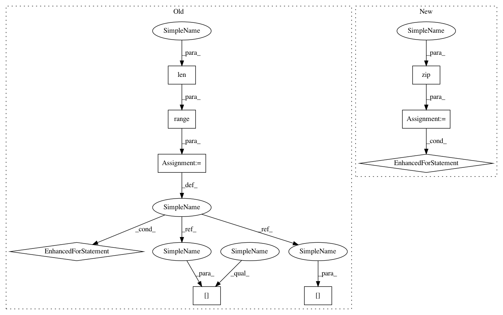

d6b9a5738af8c6dbe642b2464b4fec31c306aaa7,vocoder/layers/losses.py,MultiScaleSTFTLoss,__init__,#MultiScaleSTFTLoss#Any#Any#Any#,53
Before Change
win_lengths=[600, 1200, 240]):
super(MultiScaleSTFTLoss, self).__init__()
self.loss_funcs = torch.nn.ModuleList()
for idx in range(len(n_ffts)):
self.loss_funcs.append(STFTLoss(n_ffts[idx], hop_lengths[idx], win_lengths[idx]))
def forward(self, y_hat, y):
N = len(self.loss_funcs)
loss_sc = 0
loss_mag = 0
After Change
win_lengths=(600, 1200, 240)):
super(MultiScaleSTFTLoss, self).__init__()
self.loss_funcs = torch.nn.ModuleList()
for n_fft, hop_length, win_length in zip(n_ffts, hop_lengths, win_lengths):
self.loss_funcs.append(STFTLoss(n_fft, hop_length, win_length))
def forward(self, y_hat, y):
N = len(self.loss_funcs)
loss_sc = 0
loss_mag = 0
In pattern: SUPERPATTERN
Frequency: 3
Non-data size: 9
Instances
Project Name: mozilla/TTS
Commit Name: d6b9a5738af8c6dbe642b2464b4fec31c306aaa7
Time: 2020-06-15
Author: erogol@hotmail.com
File Name: vocoder/layers/losses.py
Class Name: MultiScaleSTFTLoss
Method Name: __init__
Project Name: mozilla/TTS
Commit Name: e051dd41b18fed43a71c9d6b7280548184fd3341
Time: 2020-06-02
Author: erogol@hotmail.com
File Name: vocoder/layers/losses.py
Class Name: MultiScaleSTFTLoss
Method Name: __init__
Project Name: geomstats/geomstats
Commit Name: df2178f286b9e23f216f1b138410ba259cd524bc
Time: 2020-04-21
Author: ninamio78@gmail.com
File Name: examples/learning_graph_structured_data_h2.py
Class Name:
Method Name: main
Project Name: mozilla/TTS
Commit Name: d6b9a5738af8c6dbe642b2464b4fec31c306aaa7
Time: 2020-06-15
Author: erogol@hotmail.com
File Name: vocoder/layers/losses.py
Class Name: MultiScaleSTFTLoss
Method Name: __init__